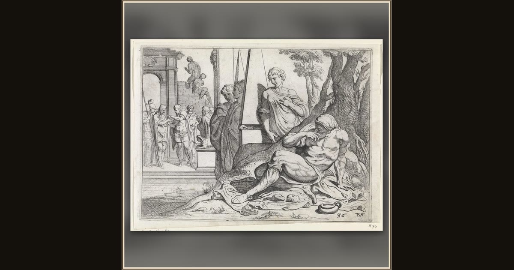

Odysseus as a beggar at the door of his house
Theodoor van Thulden, after Francesco Primaticcio · 1632–1633 · Rijksmuseum · Amsterdam, Netherlands
Disguised in rags, the true king Odysseus stands quietly at his own front door, waiting and watching among the rowdy, greedy suitors. Explore its place in Book XIV of the Odyssey.